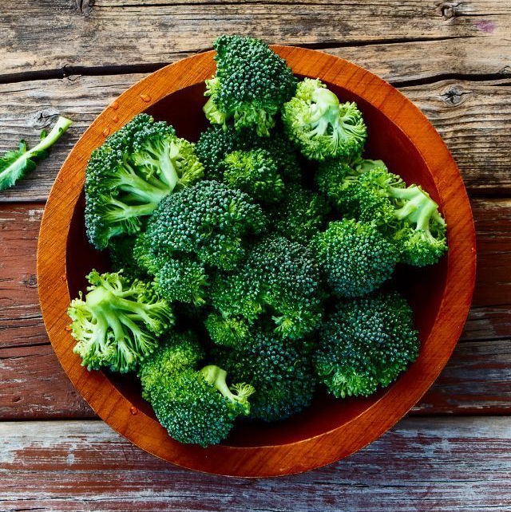

Brocolis
🌱 Como cultivar
O brócolis gosta de clima ameno e solo fértil. Plante em local bem iluminado, mantendo o solo úmido, mas sem encharcar. O ideal é adubar com matéria orgânica e colher quando as flores ainda estiverem fechadas.
🍽️ Receita
💡 Curiosidade
Sabia que o brócolis é primo distante da couve-flor? Mas, ao contrário dela, ele parece um pequeno arboreto comestível no seu prato! 🌳🥦.